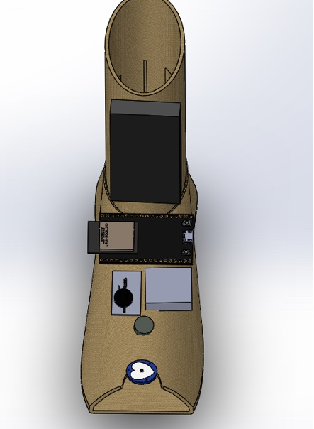
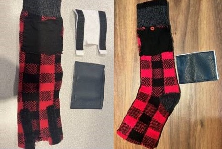
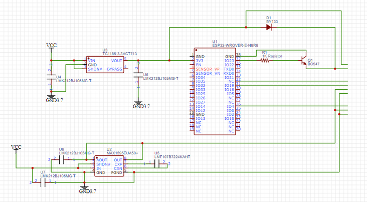
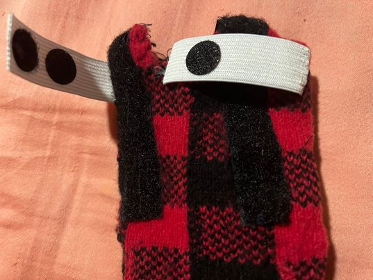
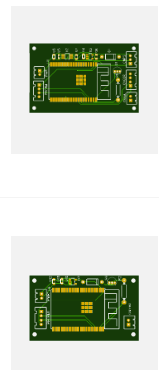
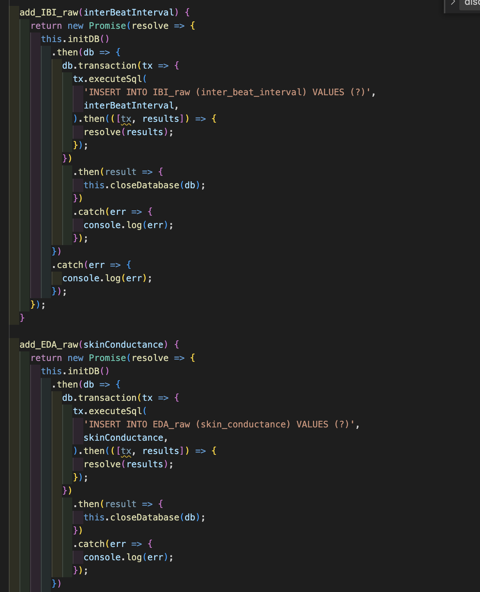

33% of people experience brief periods of high stress everyday. At work, school, or at home.
This can manifest as hyperventilating, sweating, negative and racing thoughts, and restlessness.
With long wait times and expensive fees, long-term professional care is inaccessible to many.
In a survey we conducted, 41% of people said they are unaware when they are experiencing a
period of high stress or are about to have an anxiety attack. People also hesitate to reach
out for help due to stigma and self-consciousness.
WE WANT TO PROVIDE PEOPLE WITH A WAY TO COMFORTABLY AND DISCRETELY MANAGE THEIR EVERYDAY STRESS WHILE WAITING TO ACCESS PROFESSIONAL CARE.
How do we fix it?
The Grounded device consists of two wearables, made to be discreet and comfortable, that go on your feet. The device measures stress using biometric sensors, then prompts the user to use grounding techniques to help them calm down. It collects information such as heart rate and galvanic skin response and uses an ML model to predict if the user is stressed. Then, the device will notify them to use the app's guided breathing exercises, muscle relaxation techniques, and/or mindfulness activities. By connecting to the Grounded App, the user can monitor their biometric data in real-time and access the guided relaxation techniques.
×
Measuring Stress
When a person is stressed, their heart rate increases. We use a pulse sensor to measure the BPM and inter-beat interval.
A change in emotional state can be measured by the galvanic skin response using an EDA sensor.
A machine learning model predicts whether the user is experiencing high or low stress.
×
Mitigating Stress
We offer users two techniques to help them calm down when experiencing high stress:
1. Breathing visualizer
On the app, you can follow a visualizer that guides your breathing to slow down.
2. Bi-lateral Stimulation
BLS stands for Bi-Lateral Stimulation, which is a technique that uses tapping or vibrations on both sides of the body in a back-and-forth pattern.
Research has found that this can help lower heart rate in a short amount of time, usually within 30 seconds to two minutes.
×
Designing for comfort

To develop our device, we started with gathering user feedback to design the most comfortable and discreet wearable. Many users identified that having an unobtrusive solution was a priority. The wearable is a sock that fits comfortably inside your shoe, making it completely invisible.
Our Progress So Far
Here we'll be giving weekly updates on how the build for our prototype is going. Check back here for updates!
×
Week of Jan 22nd
What we accomplished
Mechanical

For the physical design we are using a polyester-based sock (heat resistant and nonconductive material) as our base of the design and have a cut for the pulse sensor as well as the GSR sensor electrodes. The top strap (containing the electrical components) is removable and attached with Velcro to allow for the rest of the design to be washed. A rough prototype of the design has been made for both feet.
Electrical
To minimize on space we've designed a PCB for our main circuit. This week we ordered the surface mount electronic components and have started testing the circuit with simple wiring to ensure everything works.

Software
This week, we focused on connecting the main device via BLE (high-speed bluetooth) technology to the smartphone app. We were successful in polling and sending the sensor data to be displayed and stored on the app. We also built the stress prediction code by deploying and incorporating the previously trained ML model and building the data pipeline taking json file as input. We are now working on setting up the flask API for transmission of sensor data from the app to the stress prediction code. We were successful in sending the prediction results to the API.
Next steps
Here's what we're working on for next week:
Finish designing both PCBs and place an order for all remaining components.
Modify the design to accommodate for the GSR sensors and ensure they are a tight fit in the design for sensor accuracy as well as working on finalizing connection of electrical components into the design.
Continue working on the API to import data from the client.
Find an optimal way to store the sensor data on the app and send it to the Flask backend for the prediction model.
Start working on the controller code for the vibration motors.
×
Week of Feb 6th
What we accomplished
Mechanical

The design was modified to include better fit for the sensors in the design for sensor accuracy. More material was purchased which is needed for this purpose and will be sewed into the design for the next design iteration.
Electrical
The PCB design was completed this week and the order has been sent out. Final components have also been ordered. Once everything arrives, the PCB will be tested and if any corrections are needed they will be made.

Software

This week we are continuing to develop the app and Flask API. Now the API also provides the averaged BPM, IBI, and EDA values from the data provided. We are also working on a more efficient method for storing the raw sensor data in the app. Next steps are to start calibrating the sensors to be more accurate and setting up the final API calls and call them at regular intervals.
Next steps
Here's what we're working on for next week:
Order parts, assemble and test the PCB.
More design iterations for the physical design to find an optimal, comfortable fit for all the sensors and components.
Calibrate pulse and skin conductance sensor to get accurate results.
Finish setting up API calls and have the prediction results updated at regular intervals.
Meet the Team!
We are a team of Mechatronics Engineering students, feel free to reach out!